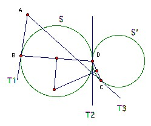

B is a point on the circle S. A is a point (distinct from B) on the tangent to S at B. C is a point not on S such that the line segment AC meets the circle S at two distinct points. S' is a circle which touches AC at C and S at D, where B and D are on opposite sides of the line AC. Show that the circumcenter of BCD lies on the circumcircle of ABC.
Solution
Let T1 be the tangent AB, T2 the tangent to the two circles at D, and T3 the tangent AC. Points on the perpendicular bisector of BD are equidistant from T1 and T2, and points on the perpendicular bisector of CD are equidistant from T2 and T3. So the intersection of the perpendicular bisectors is equidistant from T1 and T3 and hence lies on the angle bisector of BAC. But it also lies on the perpendicular bisector of BC and hence on the circumcircle of BAC (because if O is the intersection of the perpendicular bisector and the arc, then the arcs BO and BC are equal, so subtend equal angles at A, so O lies on the angle bisector).


(C) John Scholes
jscholes@kalva.demon.co.uk
8 Aug 2003
Last corrected/updated 8 Aug 03